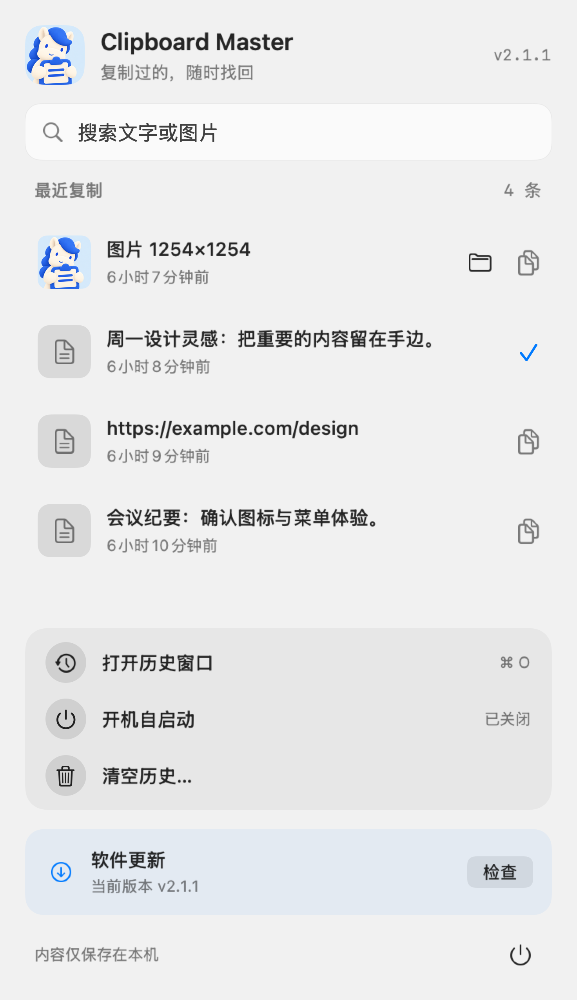

你菜单栏里的剪贴板小管家
复制第二段，
第一段也别丢。
文字、链接、图片，收好最近 200 条。
需要时搜一下，点一下，再回去粘贴。
无需账户 · 历史保存在本机 · 当前安装需要源码构建

新版 macOS 交互，点击右侧复制后菜单保持打开
把小事做顺手
少翻一次窗口，
少问一句“复制上了吗？”
01 / 找回来
文字和图片，一起留下
合计保留最近 200 条。重复内容移到最前，退出后也能读取保存的历史。
02 / 搜得到
输入关键词，缩小范围
历史窗口支持搜索。Mac 浮层也能边输入边过滤，图片可在 Finder 中定位。
03 / 看得见
成功复制，才出现对勾
Mac 每条记录有独立复制按钮。写入成功才标记，剪贴板变化后清除旧标记。
这一次的小更新
按钮给确认，
正文保留快捷操作。
点击右侧按钮，复制后留在菜单里确认；点击记录正文，仍可快捷复制并收起菜单。两种习惯都保留。
更新检查也有了清楚的状态。从检查中到安装结果，都以真实请求结果为准。
读这次改版背后的开发手记 →插画为 AI 生成的功能示意，不是应用截图。上述交互改版仅针对 macOS。
MEET YOUR CLIPBOARD PONY
小马管家，替你收好每一次复制。
从找到记录到再次复制，用一段短片认识 Clipboard Master。
约 37 秒 · 1920×1080 · 界面使用虚构示例记录 · 视频为本次复制按钮改动前录制，最新交互以上方截图为准
播放仅音效版 · 打开独立播放器阅读视频内容说明
小马抱着剪贴板登场，展示文字和图片历史、关键词搜索、复制回剪贴板、图片定位和本机存储。结尾展示项目名称与开源地址。没有需要通过声音获取的额外信息。
从这里开始
原生工具，两种桌面。
main 分支包含最新改动，Releases 可能尚未包含。请先读安装脚本与环境要求。
macOS
macOS 14+，需要 Xcode Command Line Tools / Swift 工具链。
git clone https://github.com/crawfordxx/clipboard-master.git
cd clipboard-master
./install.sh --launch安装到 /Applications，启动后在菜单栏显示。
Windows
Windows 10 / 11，需要 .NET 8 SDK。脚本会尝试用 winget 安装缺失的 SDK。
git clone https://github.com/crawfordxx/clipboard-master.git
cd clipboard-master
powershell -ExecutionPolicy Bypass -File install.ps1 -Launch使用原生托盘菜单，界面与本页 Mac 截图不同。